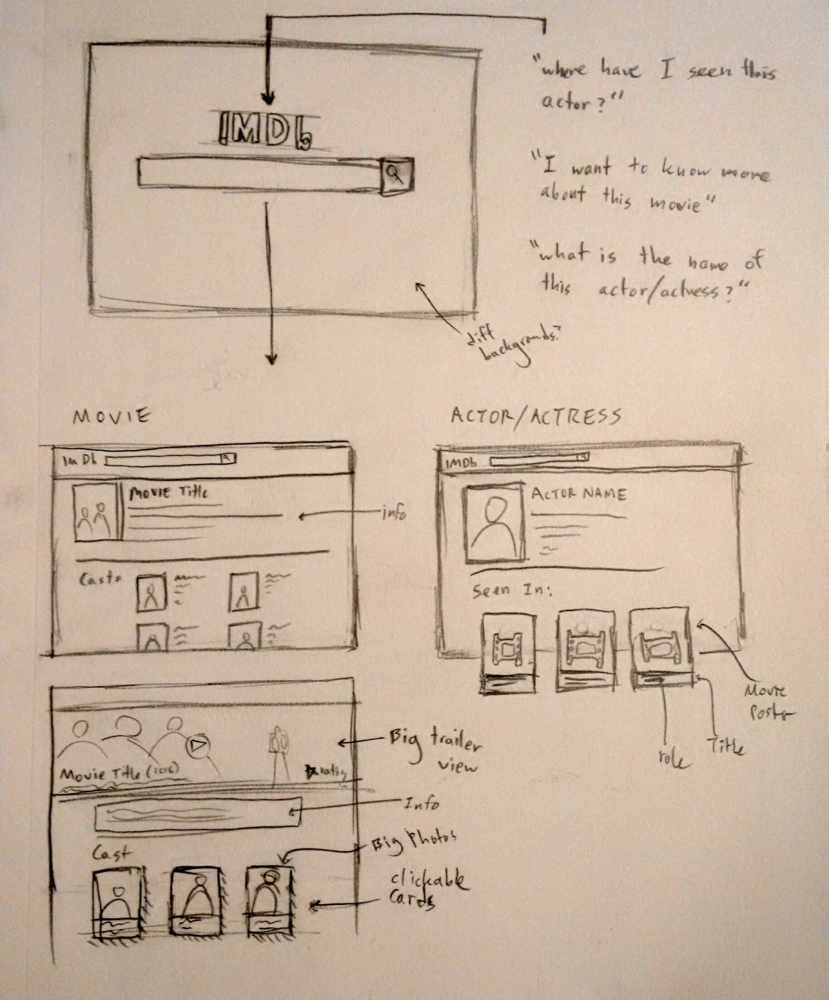
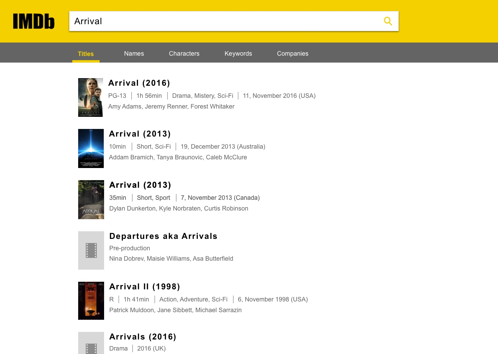

User Research:
\\ "I use IMDb to figure out who an actor is in a movie who I think I recognize but can't remember what else they've been in"
\\ "I use IMDb to look up who was in that one movie that one time, or some random trivia about a movie like where it was shot, or trying to figure out where I know a person from."
\\ "There's a lot of stuff I don't care about on IMDb. I just need to look up something from a movie."
Problem:
People want a cleaner and more streamlined experience to search for specific movies and actors.
Some initial sketches of the IMDb redesign.

The homepage of IMDb is replaced with a simple logo and search bar. The background changes weekly to movies or TV shows that have been recently popular and/or critically acclaimed.

The new search results are cleaner and show more details to the user, including the main actors/actresses, helping them find the movie or actor/actress they are looking for.
The new movie page emphasizes the main cast members. The actor/actress cards encourage the user to click on their profiles.